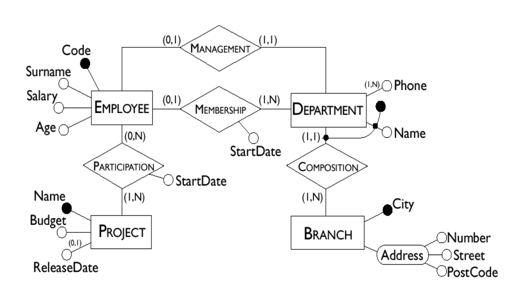

flowchart LR
A[Employee]---|"(1,5)"|B{Assignment}---|"(0, 50)"|C[Task]
11 ER Design
Coding
Database
Database Design
ER Design
This lecture discusses Entity-Relationship (ER) design, which is a technique for designing databases. It covers the ER model, ER diagrams, and the process of converting ER diagrams to relational schemas.
Introduction to Database Design
- Conceptualizing the real-world
- DB design begins with a boss or client who wants a database :)
- We must map the entities and relationships in the real world to the concepts of a database. This is called modeling.
- Sketching the key components is an efficient way to develop a design.
- Sketch out (and debug) schema designs;
- Express as many constraints as possible;
- Convert to relational DB once the client is happy.
The Entity/Relationship (E/R) Model
- Overview:
- Using the E/R model to model the real world.
- From there, designing a database schema:
- Reconstructuring of an E/R model
- Translating an E/R model into a logical model (DB schema)
- E/R model is a Visual data model (diagram-based):
- Quickly “chart out” a databse design
- Easier to “see” big picture
- Comparable to class diagrams in UML
- Basic concept: entities and their relationships along with attributes describing them.
Note 1: Entity Set: (Represented by a rectangle \(\Huge{\boxed{\ \ }}\))
- An entity set represents a category of objects that have properties in common and an autonomous existence.
- E.g., City, Department, Employee, Sale
- An entity is an instance of an entity set.
- E.g., “San Francisco” is an entity in the City entity set.
Note 2: Relationship Sets: (Represented by a diamond \(\Huge{\diamond}\))
- A relationship set is an association between two or more entity sets.
- E.g., Residence is an relationship set between entity sets City and Employee.
- A relationship is an instance of a n-ary relationship set.
- E.g., the pairt (“San Francisco”, “John”) is an instance of relationship Residence.
- Recursive Relationships
- Recursive relationsihps relate an entity to itself.
- Note, sometimes, relationship is not symmetric.
- In this case, we need to indicate the two roles that the entity plas in the relationship.
- E.g., “Sovereign” is a recurvie relationship of “Succession.” However, the two rols are “Predecessor” and “Successor”.
- Ternary Relationships
- Ternary relationships relate three entity sets.
- E.g., “Supply” is a ternary relationship between “Supplier”, “Product”, and “Department.”
Note 3: Attributes: (Represented by an oval \(\Huge{\circ}\))
- An attribute describes elementary properties of entities or relationships.
- E.g., “Name” is an attribute of the entity set “City.”
- Attributes may be single-valued or multi-valued.
- Composite attributes are grouped attributes of the same entity or relationship that have closed connected meaning or uses.
- E.g., “Address” is a composite attribute of the entity set “City.” “Address” can be further decomposed into “Street,” “City,” “State,” and “Zip.”
Note 4: Cardinalities
- Each entity set participates in a relationship set with a minimum (
min) and a maximum (max) cardinality. - Cardinalities constrain how entity instances participate in relationship instances.
- Graphically, cardinalities are represented by lines connecting entities to relationships.
- Note: an entity might not participate in any relationship.
- In principle, cardinalities are pairs of non-negative integers \((n,N)\) such that \(n\leq N\), where \(N\) means any number.
- Minimum cardinality \(n\):
- If \(0\), entity participation in a relationship is optional.
- If \(1\), entity participation in a relationship is rmandatory.
- Maximum cardinality \(N\):
- If \(1\), each instance of the entity is associated with at most one instance of the relationship.
- If \(N\), each instance of the entity is associated with many instances of the relationship.
- Examples of Cardinalities
flowchart LR
A[Tourist]---|"(1,N)"|B{Reservation}---|"(0, N)"|C[Voyage]
flowchart LR
A[Order]---|"(0,1)"|B{Sale}---|"(1, 1)"|V[Invoice]
flowchart LR
A[Person]---|"(1,1)"|B{Residence}---|"(0, N)"|C[City]
- Multiplicity of Relationships
- If entities \(E_1\) and \(E_2\) participate in relationship \(R\) with cardinalities \((n_1,N_1)\) and \((n_2,N_2)\), then the multiplicity of \(R\) is \(N_1\)-to-\(N_2\) (which is the same as \(N_2\)-to-\(N_1\)).
- Examples:
- \(1\)-to-\(1\)
- \(1\)-to-\(N\) or \(N\)-to-\(1\)
- \(N\)-to-\(N\)
- Cardinalities of Attributes
- Describe min/max number of values an attribute can have.
- When the cardinality of an attribute is \((1,1)\), it can be omitted (single-valued attributes).
- The value of an attribute, nmay also be null or have several values (multi-valued attributes).
flowchart LR
A((Surname)) --- B[Person]
C((License Number)) --- |"(0,1)"| B
B --- |"(0, N)"| D((CarRegistration#))
- Multi-valued attributes foten represent situations that can be modeled with additional entities.
- E.g., the above model can be transformed into the following model:
flowchart LR
A((Surname)) --- B[Person]
C((License Number)) --- |"(0,1)"| B
B --- |"(0,N)"| E{Owns}
E --- |"(1,1)"| D((CarRegistration#))
Note 5: Keys: (Represented by an underline \(\Huge{\underline{\ \ }}\) or \(\Huge{\bullet}\))
- Keys consist of minimal sets of attributes which uniquely identify instances of an entity set.
- SSN may be a key of Person
- firstName, middleName, lastName, address may be a key of Person
- In most cases, a key is formed by one or more attributes of the entity itself (internal key).
- Sometimes, an entity doesn’t have a key among its attributes. This is called a weak entity.
- Solution: the keys of related entities brought into help with identification (becoming foreign keys).
- A key for a relationship consists of the keys of the entities it relates.
- Example of Keys
- Internal, single-attribute
- internal, multi-attribute
- weak entity with foreign key

- Example of Schema with Keys 
Challenges in E/R Design: Modeling the “Real World”
- Life is arbitrarily complex
- Design choices: should a concept be modeled as an entity, an attribute, or a relationship?
- Limitations of the E/R Model: A lot of data semantics can be captured but some cannot.
- Key to successfull model: parsimony:
- As complex as necessary, but no more.
- Choose to present only relevant things.
From E/R Model to Relationship Database Schema
- Relational Database Design
- Given a conceptual schema (ER, but could also be other models), generate a logical (relational) schema.
- It is helpful to divide the design into two steps:
- Restructuring (refining) of the E/R schema, based on criteria for the optimization of the schema
- Tranlation into the logical model, based on the features of the logical model (relational model)
Restructuring An E/R Model
- Restructuring Overview
- Input: E/R Schema
- OUtput: Resturctured (Refined) E/R Schema
- Restructuring includes:
- Analysis of redundancies
- Chossing entity set vs. attribute
- Limiting the use of weak entity sets
- Selection of keys
- Creating entity sets to replace attributes with cardinality greater than one.
- Example: Redundancies
- In the followign E/R schema, the attribute
Manf. Addressis redundant.
- In the followign E/R schema, the attribute
flowchart LR
B(("<u>Part Number</u>")) --- A[Part]
C((Name)) --- A
D((Manf. Name)) --- A
E((Manf. Address)) --- A
- The schema can be restructured as follows:
flowchart LR
B(("<u>Part Number</u>")) --- A[Part]
C((Name)) --- A
D((Manf. Name)) --- A
F[Manufacturer] --- H(("<u>Name</u>"))
A --- |"(1, 1)"| E{"Made By"}
E --- |"(1, N)"| F
F --- G((Address))
- However, here’s still a redundancy in the schema: we don’t need the
Manf. Nameattribute.
flowchart LR
B(("<u>Part Number</u>")) --- A[Part]
C((Name)) --- A
F[Manufacturer] --- H(("<u>Name</u>"))
A --- |"(1, 1)"| E{"Made By"}
E --- |"(1, N)"| F
F --- G((Address))
- Entity Sets vs. Attributes
- An entity set should satisfy at least one of the following conditions:
- It is mor than the name of something; it has at least one non-key attribute, or
- It is the many in a many-one or many-many relationship.
- Rules of thumb:
- A thing in tis own right: entity set
- A detail about some other thing: attribute
- A detial correlated among many things: entity set
- It is to avoid redundancy.
- An entity set should satisfy at least one of the following conditions:
- Example: domain fact change: A
Partcan have more than oneManufacturer.
flowchart LR
B(("<u>Part Number</u>")) --- A[Part]
C((Name)) --- A
F[Manufacturer] --- H(("<u>Name</u>"))
A --- |"(1, N)"| E{"Made By"}
E --- |"(1, N)"| F
F --- G((Address))
- However, if we add another domain fact change: No manufacturer address:
flowchart LR
B(("<u>Part Number</u>")) --- A[Part]
C((Name)) --- A
F[Manufacturer] --- H(("<u>Name</u>"))
A --- |"(1, N)"| E{"Made By"}
E --- |"(1, N)"| F
Manufacturerdoes not have a nonkey attribute anymore…- However, it is an “many” in a many-to-many relaionship.
- So, we cannot convert it to an attribute.
- Example: What if we start from the following schema?
flowchart LR
B(("<u>Part Number</u>")) --- A[Part]
C((Name)) --- A
D((Manf. Name)) --- A
E((Manf. Address)) --- A
- We still apply the same domain fact changes:
- A
Partcan have more than oneManufacturer, and - No manufacturer address.
- A
flowchart LR
B(("<u>Part Number</u>")) --- A[Part]
C((Name)) --- A
D((Manf. Name)) ---|"(1,N)"| A
- It looks good, but we want to avoid multi-value attributes as it is not compatible with relational DBs.
- So, we convert the multi-value attribute
Manf. Nameto an entity set. - Another example: if we apply the domain fact change: A
Manufactuerecan have 0Part. Then,
flowchart LR
B(("<u>Part Number</u>")) --- A[Part]
C((Name)) --- A
F[Manufacturer] --- H(("<u>Name</u>"))
A --- |"(1, N)"| E{"Made By"}
E --- |"(0, N)"| F
F --- G((Address))
- If no parts are associated with a manufacturer, then we lose all information on the manufacturer in this system.
- When to use weak entity sets?
- The usual reason is that there is no global authority capble of creating unique IDs.
- Don’t oversue weak entity sets:
- Beginner database designers often doubt that anything could be a key by itself:
- The make all entity sets weak, supported by all other entity sets to which they are linked.
- It is usually better to create unique IDs
- Beginner database designers often doubt that anything could be a key by itself:
- Selecting a Primary Key
- Every entity must have a primary key.
- The crteria for this decision are as follows:
- Attributes with null values cannot form primary keys.
- One/few attributes is preferable to many attributes.
- Internal keys preferable to external ones (week entities depend for their existence on other entities).
- Keep Keys Simple: Multi-attribute and/or string keys
- Waste space (are redundant)
- Break encapsulation
- Are brittle (nasty interaction of above two points)
- Also: computers are good at numbers, not strings.
- Attributes with Cardinality Greater than One
- The relational model doesn’t allow multi-valued attributes. We must convert these to entity sets.
- Example: Multi-valued Attributes
- Consider the following schema:
flowchart LR
B(("<u>Part Number</u>")) --- A[Part]
C((Name)) --- A
D((Manf. Name)) ---|"(1,N)"| A
- We have to convert it to the following schema (making
Manf. Namean entity set):
flowchart LR
B(("<u>Part Number</u>")) --- A[Part]
C((Name)) --- A
F[Manufacturer] --- H(("<u>Name</u>"))
A --- |"(1, N)"| E{"Made By"}
E --- |"(1, N)"| F
Translation into the Logical Model
- Overview
- Input: E/R Schema
- Output: Relational Schema
- Starting from an E/R schema, an equivalent relationap schema is constructed.
- “equivalent:” a schema capble of representing the same information.
- A good translation should also:
- not allow redundancy
- not invite unnecessary null values
- Each entity set becomes a relation whose attributes are
- the attributes of the entity set, and
- Each relationship becomes a relation whose attributes are
- the keys of the entity sets that it connects, plus
- the attributes of the relationship itslef.
- There are some exceptional cases here that will come up later.
Many-to-Many Relationships
- Example 1
flowchart LR
A[Employee] --- |"(0, N)"| B{Participation} --- |"(0, N)"| C[Project]
D((Surname)) --- A
E((Salary)) --- A
F(("<u>Name</u>")) --- A
G((StartDate)) --- B
C --- H((Name))
C --- I((Budget))
C --- J(("<u>Code</u>"))
Tip 1: Answer
- Employee(Number, Surname, Salary)
- Project(Code, Name, Budget)
- Participation(EmployeeNumber, ProjectCode, StartDate)
- Example 2
flowchart TB
A{Composition} --- |"(0, N) Part"| B[Product]
B --- |"(0, N) Subpart"| A
C((Quantity)) --- A
B --- D((Cost))
B --- E((Name))
B --- F(("<u>Code</u>"))
Tip 2: Answer
- Product(Code, Name, Cost)
- Composition(PartCode, SubpartCode, Quantity)
- Example 3
flowchart LR
A[Supplier] --- |"(0, N)"| B{Supply} --- |"(1, N)"| C[Product]
B --- |"(1,N)"| D[Department]
D --- E(("<u>Name</u>"))
D --- F((Telephone))
G(("<u>SupplierID</u>")) --- A
H(("SupplierName")) --- A
I((Quantity)) --- B
C --- J(("<u>Code</u>"))
C --- K(Type)
- This schema can be translated into the following relational schema:
Tip 3: Answer
- Supplier(SupplierID, SupplierName)
- Product(Code, Type)
- Department(Name, Telephone)
- Supply(SupplierID, ProductCode, DeptName, Quantity)
One-to-One Relationships
- Example 1: with mandatory participation for one
flowchart LR
A[Player] --- |"(1,1)"| B{Contract} --- |"(1,1)"| C[Team]
D(("<u>DateOfBirth</u>")) --- A
E(("<u>SurName</u>")) --- A
F((Position)) --- A
G((Salary)) --- B
C --- H(("<u>Name</u>"))
C --- I((Town))
C --- J(TeamColor)
Tip 4: Answer
- Player(DateOfBirth, SurName, Position)
- Team(Name, Town, TeamColor)
Contract(PlayerDateOfBirth, PlayerSurName, Team Salary)- This line is incorrect because one player can only have one contract with one team. Having a contract with a team is not a unique identifier for a player.
- For example, this schema allows Messi to sign contracts with Barcelona and Real Madrid at the same time. This is not possible in real life.
- Contract(PlayerDateOfBirth, PlayerSurName, Team, Salary)
Another correct solution:
- Player(DateOfBirth, SurName, Position, TeamName, Salary)
- Team(Name, Town, TeamColor)
- Example 2: with mandatory participation for both
flowchart LR
A[Head] --- |"(1,1)"| B{Management} --- |"(1,1)"| C[Department]
D((Salary)) --- A
E((Name)) --- A
F(("<u>Number</u>")) --- A
G((StartDate)) --- B
C --- H(("<u>Name</u>"))
C --- I((Telephone))
C --- J((Branch))
Tip 5: Answer
- Head(Number, Name, Salary, DeptName, StartDate)
- Department(Name, Telephone, Branch)
Another correct solution:
- Head(Number, Name, Salary, StartDate)
- Department(Name, Telephone, Branch, HeadNumber)
- Remark: We included
StartDatein tableHeadinstead of tableDepartmentbecause it is more meaningful to associate the date as a dept was managed with the manager (i.e., the head) rather than with the department.
- Example 3: with optional participation for one
flowchart LR
A[Employee] --- |"(1,1)"| B{Management} --- |"(1,1)"| C[Department]
D((Salary)) --- A
E((Name)) --- A
F(("<u>Number</u>")) --- A
G((StartDate)) --- B
C --- H(("<u>Name</u>"))
C --- I((Telephone))
C --- J((Branch))
Tip 6: Answer
- Employee(Number, Name, Salary)
- Department(Name, Telephone, Branch, ManagerNumber, StartDate)
What if both entities had optional participation, i.e., \((0,1)\)?
- Employee(Number, Name, Salary)
- Department(Name, Telephone, Branch)
- Management(ManagerNumber, DeptName, StartDate)
How can we guarantee that a department cannot have more than one manager?
- Declare a
UNIQUEconstraint for attributeDeptNamein tableManagement.
Can DeptName be a key instead of ManagerNumber?
- Yes, for this schema, choosing either of them to be a key is correct.
Summary of Types of Relationship
- Many-to-many: create a new relation with the keys of the entities and the attributes of the relationship.
- One-to-many:
- Manditory participation for one: add the key of the entity with mandatory participation to the relation of the entity with optional participation.
- Manditory participation for both: add the keys of both entities to the relation.
- One-to-one:
- Manditory participation for one: add the key of the entity with mandatory participation to the relation of the entity with optional participation.
- Manditory participation for both: add the keys of both entities to the relation.
- Optional participation for both: add the keys of both entities to the relation.
See summaries in slides
20-er-design-part3.pdfWill the schema be “good”?
- The process ensure that there is no redundancy.
- But only with respect to what the E/R diagram represents.
- The next topic (DB normalization) will help us better analyze the goodness of a schema design.